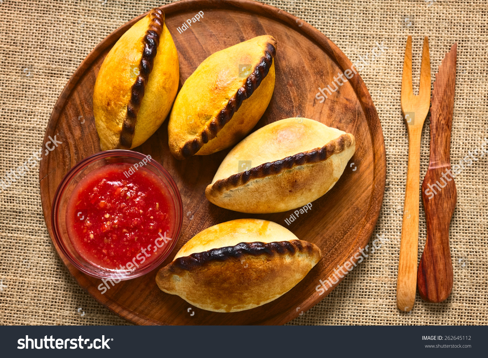

Empanadas salteñas
Las empanadas salteñas se destacan por que tienen como ingredinte diferencial la papa y la carne se corta a cuchillo
Ingredientes
- 1 kilo de carne (nalga, cuadrada, bola de lomo)
- 700 g de cebolla
- 300 g de morrón rojo
- 250 g de cebolla de verdeo
- 400 g de papas cortadas en cubo
- 200 g de grasa
- 6 huevos
- Sal, orégano, pimentón, ají molido y comino
Preparacion
- Cortar las cebollas y los pimientos (sin pepitas ni nervaduras) en cubos del mismo tamaño
- Cortar la carne en pequeños cubos y hacer lo mismo con las papas
- Colocar la grasa en una olla y dorar los pimientos y la cebolla hasta que transparente. Salar
- Incorporar la carne y luego las papas
- Retirar del fuego minutos antes de terminar la cocción, condimentar y dejar enfriar
- Agregar la cebolla de verdeo picada y los huevos duros picados justo antes de armar las empanadas
- Estirar los discos de masa hasta obtener 13 cm de diámetro
- Cocinar en horno a 250º C durante unos 12 minutos o freír en abundante grasa de pella
- Servir y disfrutar
